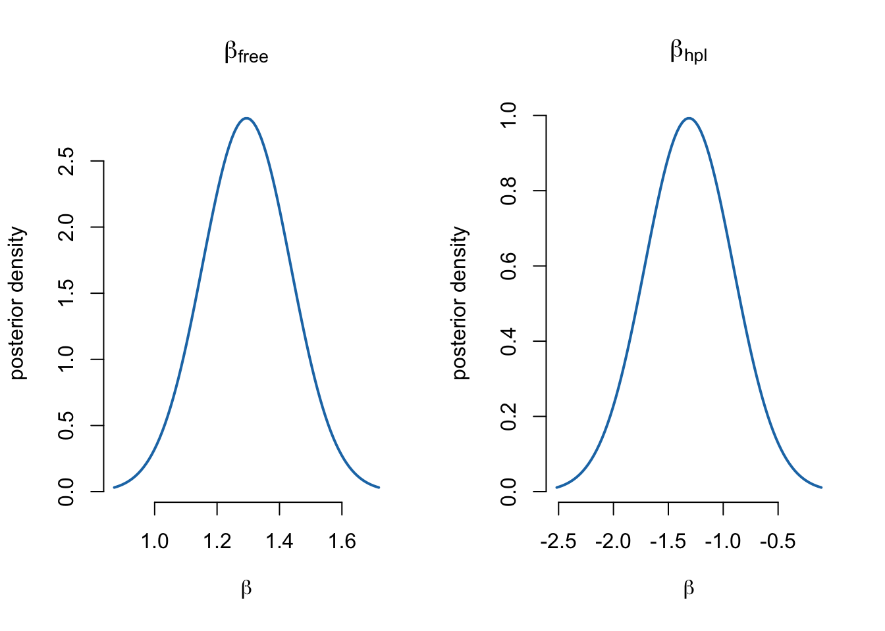
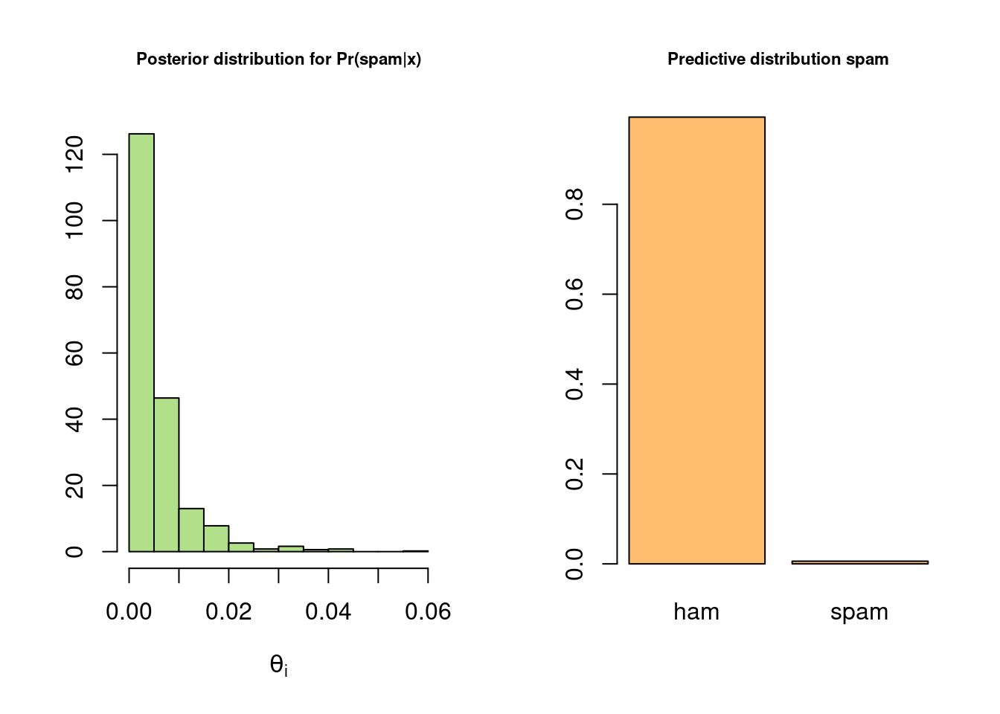

# install.packages("mvtnorm")
# install.packages("RColorBrewer")
library(mvtnorm) # package with multivariate normal density
library(RColorBrewer) # just some fancy colors for plotting
prettyCol = brewer.pal(10,"Paired")Posterior approximation - logistic regression
Load packages
Reading data
Data<-read.table("https://raw.githubusercontent.com/mattiasvillani/BayesLearnCourse/master/Notebooks/R/SpamReduced.dat",header=TRUE)
chooseCov <- c(1:16) # covariates to include in the model
covNames <- names(Data)[2:length(names(Data))]; # Read off the covariate names
y <- as.vector(Data[,1]);
X <- as.matrix(Data[,2:17]);
X <- X[,chooseCov]; # Pick out the chosen covariates
covNames <- covNames[chooseCov]; # ... and their names
nPara <- dim(X)[2];# Setting up the prior
tau <- 10; # Prior std beta~N(0,tau^2*I)
mu <- as.vector(rep(0,nPara)) # Prior mean vector
Sigma <- tau^2*diag(nPara);Coding up the log posterior function
LogPostLogistic <- function(betaVect,y,X,mu,Sigma){
nPara <- length(betaVect);
linPred <- X%*%betaVect;
logLik <- sum( linPred*y -log(1 + exp(linPred)));
logPrior <- dmvnorm(betaVect, matrix(0,nPara,1), Sigma, log=TRUE);
return(logLik + logPrior)
}Finding the mode and observed information using optim
initVal <- as.vector(rep(0,nPara));
OptimResults<-optim(initVal,LogPostLogistic,gr=NULL,y,X,mu,Sigma,
method=c("BFGS"), control=list(fnscale=-1),hessian=TRUE)
postMode = OptimResults$par
postCov = -solve(OptimResults$hessian) # inv(J) - Approx posterior covar matrix
postStd <- sqrt(diag(postCov)) # Computing approximate stdev
names(postMode) <- covNames # Naming the coefficient by covariates
names(postStd) <- covNames # Naming the coefficient by covariatesThe posterior mode
print(postMode) our over remove internet free
0.4182337564 1.1753728274 2.9209159624 0.9696191832 1.2944179785
hpl X. X..1 CapRunMax CapRunTotal
-1.3114765580 0.5673271834 8.2721841002 0.0118045995 0.0005570864
const hp george X1999 re
-1.4278739769 -2.0411544329 -6.0021766421 -0.4565997652 -0.8577822566
edu
-1.6854611484 The posterior standard deviations are computed from the covariance
print(postStd) our over remove internet free hpl
0.0730320059 0.2321086446 0.3302456189 0.1671111775 0.1412670447 0.4017479213
X. X..1 CapRunMax CapRunTotal const hp
0.0947016271 0.6851475903 0.0017545736 0.0001418867 0.0847302223 0.2998192145
george X1999 re edu
1.1494144667 0.1902088214 0.1476136582 0.2554459774 Plot the marginal posterior of \(\beta\) for the free and hpl covariates
par(mfrow=c(1,2))
gridVals = seq(postMode['free']-3*postStd['free'], postMode['free']+3*postStd['free'],
length = 100)
plot(gridVals, dnorm(gridVals, mean = postMode['free'], sd = postStd['free']),
xlab = expression(beta), ylab= "posterior density", type ="l", bty = "n",
lwd = 2, col = prettyCol[2], main = expression(beta[free]))
gridVals = seq(postMode['hpl']-3*postStd['hpl'], postMode['hpl']+3*postStd['hpl'],
length = 100)
plot(gridVals, dnorm(gridVals, mean = postMode['hpl'], sd = postStd['hpl']),
xlab = expression(beta), ylab= "posterior density", type ="l", bty = "n",
lwd = 2, col = prettyCol[2], main = expression(beta[hpl]))
Simulate from normal approximation and make prediction at mean covariate
xStar = colMeans(X)
nSim = 1000
probSpam = rep(0,nSim)
spamPred = rep(0,nSim)
for (i in 1:nSim){
betaDraw = as.vector(rmvnorm(1, postMode, postCov)) # Simulate from approx post
linPred = t(xStar)%*%betaDraw
probSpam[i] = exp(linPred)/(1+exp(linPred)) # draw from posterior of Pr(spam|x)
spamPred[i] = rbinom(n=1,size=1,probSpam[i]) # draw from model given probSpam[i]
}
par(mfrow=c(1,2))
hist(probSpam, freq = FALSE, xlab = expression(theta[i]), ylab= "",
col = prettyCol[3], cex.main = 0.7,
main = "Posterior distribution for Pr(spam|x)")
barplot(c(sum(spamPred==0),sum(spamPred==1))/nSim, col = prettyCol[7],
names.arg = c("ham","spam"),
main = "Predictive distribution spam", cex.main = 0.7)